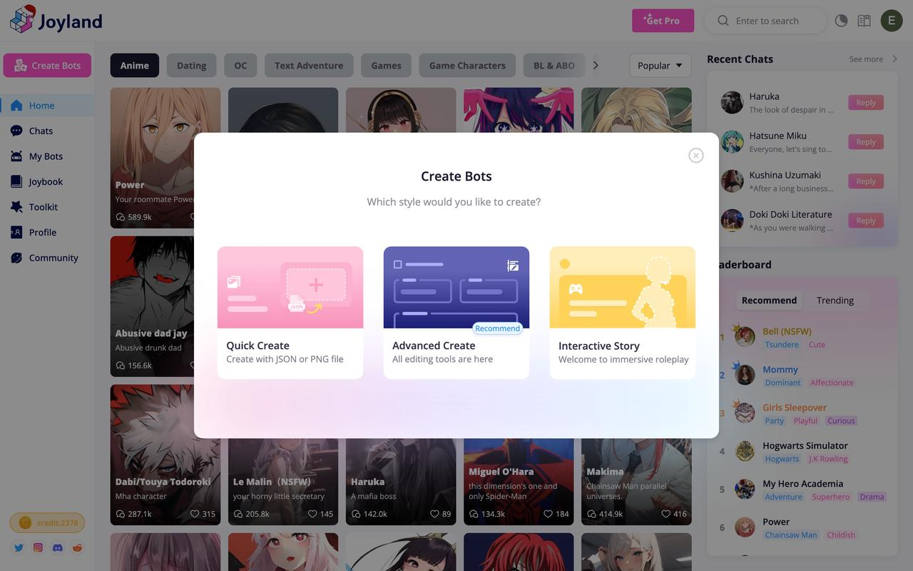
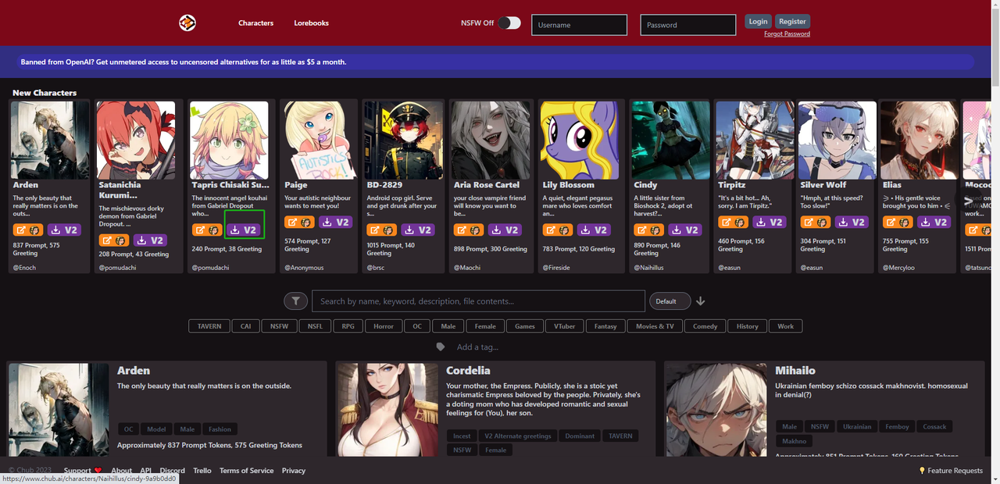
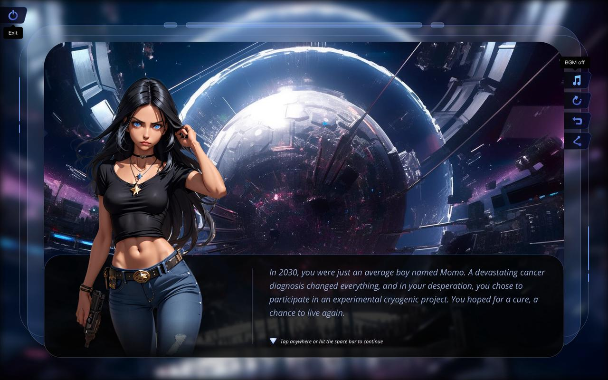

Joyland 新手 5 分钟入门｜从零到跟 AI 角色聊上第一句
第一次接触 Joyland 不知道怎么玩？这篇带你从下载到创建角色再到互动故事，完整走一遍最短路径，零门槛上手。
这篇能带你从完全不懂到用起来——不需要任何 AI 聊天或角色扮演的基础，跟着做就行。
Joyland 到底是干嘛的
想象一下：你手机里装着一个 App，打开后里面住着几百上千个「会跟你说话的角色」——可能是动漫里的鸣人、可能是你自己脑补出来的图书馆守馆人、也可能是赛博朋克世界里的情报商人。你点进去就能跟它聊天，它会用自己设定好的性格、语气、背景跟你互动，而且聊完就走，没有压力。
Joyland官网上就是这样的地方。它把「AI 角色聊天」做成了一个社区平台——有人做角色、有人聊角色、有人把角色串起来写成互动故事。你既可以当纯消费者逛逛画廊跟现成角色聊聊天，也可以当创作者自己捏一个角色让别人来玩。对新手来说，先从「逛画廊聊现成的」开始最轻松，等玩熟了再动手做自己的也不迟。
五分钟上手：从下载到第一次跑通
别被各种功能吓到——第一次用 Joyland 只需要四步，五分钟搞定。
第一步：下载安装
手机应用商店搜一下就能找到，或者直接从Joyland下载拿安装包。装好打开，注册账号（邮箱就行，或者用第三方登录），进到首页你会看到一个「画廊」——这是整个社区里别人做好的角色和互动故事，随手点一个卡片就能开始聊。

第二步：选一个角色开始聊天
画廊里的角色太多怎么挑？新手建议从「热门」标签或「推荐」里随便点一个——比如搜你喜欢的动漫角色名，或者逛一下首页推荐的几个卡片。点进去后先别慌，界面很简单：中间大对话框是聊天区，底部有输入框，右边有个按钮可以切换 AI 模型。
第三步：发第一句话
直接在输入框敲一句话就行——比如「你好，我是第一次来」。AI 会很快回你第一句，它的开场白是角色创建者预设的，之后的回复就是 AI 实时生成的了。Free Model 是默认模型，响应速度最快，对新手来说完全够用。
第四步：想自己捏角色？快速创建
聊了几个现成角色后动心了？点首页右上角的创建按钮，有「快速创建」和「高级创建」两条路。新手先走快速创建——输入角色名、选性别、填一个年龄段，再写个一两句话的角色描述（比如「一个温柔的图书馆守馆人，喜欢跟读者聊书」），最后点一下让 AI 帮你生成头像，一个角色就上线了。

上手后先玩这三个功能
跑通了基本流程，接下来这三个功能最值得新手优先碰——每个都能让你突然觉得「哦原来还能这么玩」。
一、互动故事模式：让你当主角
这不是跟单个角色聊天，而是进入一个完整的故事场景。创建者给你搭好了世界观、放好了几个 NPC 角色、写好了开场剧情，你进去之后每一轮可以从三个选项里挑一个行动，AI 接着往下推进剧情。你会发现它跟单角色聊天完全是两种体验——单角色像跟一个朋友唠嗑，互动故事像自己在玩一部可以选结局的文字冒险游戏。

想自己写互动故事也不难，流程官方拆成了五步：构思点子、准备角色头像、设定主角是谁、写世界观骨架、最后写开场场景和三个初始选项。世界观有 1000 字符的限制，逼着你精炼表达——细节留给 AI 在互动里自然展开就行。
二、切换 AI 模型：同个角色不同味道
跟同一个角色聊了几天后，试试换个模型。Free Plan 只有 Free Model 可选，但升级到 Standard 会员后一下子解锁五款：Roleplay 模型对角色设定的遵循最精确，角色扮演不容易出戏；StoryStream 模型擅长长线剧情，几十轮对话下来能保持连贯性；Lifelike 模型追求自然真实的对话感；Vividtale 模型会给你电影级的感官描写，把场景拍出来一样。同一句开场白，切个模型味道完全不同——这是很多老用户公认的「解锁新玩法」开关。模型之间的详细对比在Joyland文档里写得很清楚，想深挖的可以去翻。
三、创建自己的角色：从零捏一个 AI
快速创建走完一遍后，试试高级创建。基础信息三个字段（名称、性别、年龄）是固定的，之后最重要的三个部分是角色描述、开场白、场景设定。角色描述写得越详细，AI 的表现越稳定——性格、背景、说话风格都在这里交代清楚。开场白是 AI 见到玩家说的第一句话，直接决定了整个对话的气氛。场景设定给 AI 一个起始情境，比如「你正在图书馆整理旧书，突然听到有人敲门」，比凭空开始聊自然多了。
有个小细节值得注意：性别和年龄如果不填，可能影响角色在社区首页的推荐——想让更多人看到你的角色，最好都填上。年龄字段可以是数字也可以是描述性文字（比如「外表 20 岁，实际年龄不详」），随你怎么设定。
小白的三个常见疑问
玩到这里你大概率会冒出这些问题——提前帮你理清楚。
Q：Free Plan 每天只有 10 Credits，聊完了怎么办？
Free Plan 的 Credits 是每日重置的，今天用完了明天又有 10 个。10 个 Credits 大概够聊几十轮对话——如果你发现自己每天都不够用，说明你真的喜欢 Joyland，可以考虑升级 Standard 会员，每月 5000 Credits 加上每日 20 张免费图片，折算下来刚好够重度日常使用。但对纯新手来说，Free Plan 的配额完全够你熟悉平台的玩法。
Q：创建角色时 AI 出戏了怎么办？
最常见的原因是角色描述写得太模糊。别只写「一个很酷的剑客」——要写清楚他的背景（师从何人、经历过什么、现在在做什么）、说话风格（话少还是话多、带不带口头禅、对不同类型的人态度如何）、性格特点（冷静还是冲动、正直还是腹黑）。AI 不是读心术，你给的信息越具体，它演得越稳。另外试试切换到 Roleplay 模型，它对角色设定的遵循度比 Free Model 高不少。
Q：互动故事写了没人玩？
新写的故事需要自己主动推广——在画廊里给它打上合适的标签，比如「奇幻冒险」「校园青春」「科幻悬疑」，让感兴趣的用户能搜到。世界观设定里那 1000 字符的骨架写好也很关键——玩家点开故事先看开场剧情，如果骨架里有个吸引人的核心冲突，留下来玩的概率就高很多。
好了，现在你已经知道 Joyland 是什么、怎么上手、该先碰哪几个功能、遇到问题怎么解决。先别一口气全试完——今天逛画廊聊两三个现成角色，明天动手捏一个自己的，后天试着进一个互动故事当主角。玩够了之后再去翻翻 Joyland 文档，里面有五款模型的详细对比、记忆系统怎么用、Credits 怎么省，进阶之路长着呢。顺手提一下，这套资料在GitHub、Gitee和GitCode上都有同步维护，挑你顺手的仓库源就行。